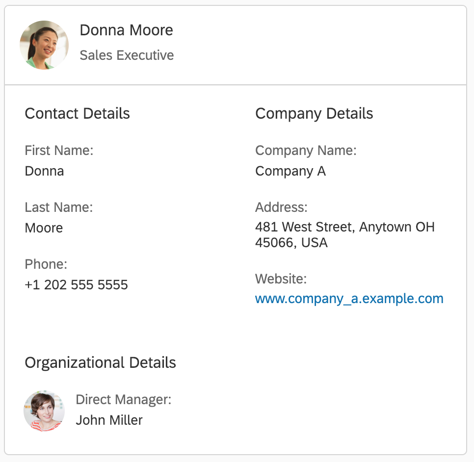

Integration Card Types
Declarative Types
List Card

Analytical Card
Table Card

Object Card
Timeline Card
Calendar Card
Other Types
Adaptive Card
This is a special type of card, which application developers can use to visualize and reuse cards that are created using the Microsoft Adaptive Cards specification and manifest.
Component Card
For more flexible implementations of card content, the Component Card allows the integration of UI5 Components as content.
WebPage Card
Allows to embed HTML page in the content area.
Integration Card and sap.f.Card
Note, that besides the sap.ui.integration.widgets.Card there is also the
sap.f.Card.
While the sap.ui.integration.widgets.Card is designed for easy integration and
configuration, the sap.f.Card
provides more freedom in choosing the structure and the controls which you can include.
The Card Explorer documents only the sap.ui.integration.widgets.Card.
For more information and comparison between sap.ui.integration.widgets.Card and
sap.f.Card read More About Cards.